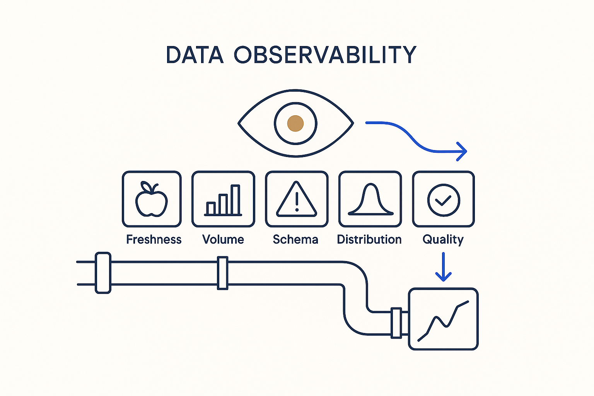

Continuous visibility into the health of your data pipelines — freshness, volume, schema drift, distribution and quality — so problems surface on their own, at the boundary, in time to fix them.

> Continuous visibility into the health of your data pipelines — freshness, volume, schema drift, distribution and quality — so problems surface on their own, at the boundary, in time to fix them.
Data observability borrows a hard-won idea from the software-monitoring world and points it at data: don’t wait for a broken report to tell you something went wrong — watch the health of the pipelines continuously and let the problem announce itself. The classic signals are freshness (is the data on time?), volume (did roughly the right amount arrive?), schema (did the shape change?), distribution (do the values still look sane?), and lineage (what does this break affect?). Together they turn silent failures into early warnings.
It is a reality check made continuous and automatic. Instead of a human occasionally sampling the data, the platform is always comparing what arrived to what was expected — against the contract, the calendar, the provider’s own quality results — and raising a flag at the boundary the moment reality diverges. That is what makes accountability enforceable: you can only be held to an agreement that is actually being watched.
Bring the observability domain’s ideas in, but model them as metadata rather than bolting on a separate tool: the checks, their thresholds, their results, and the incidents they raise all live in the same structured world as the model they protect. Observed, not hoped — and queryable.
Where it lives: the delivery layer of Breakthrough Modeling — the health of the pipelines, watched continuously.